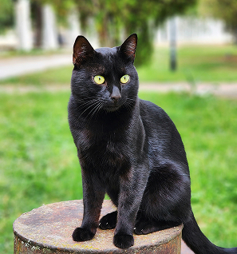
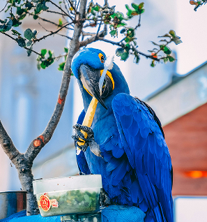
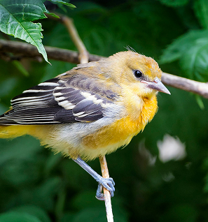

팝업
찾습니다
가족을 찾습니다
-
 실종
실종스텐다드 푸들 암컷 8살 푸들 암컷 8살
- 실종장소 서울특별시 마포구 월드컵공원
- 실종날짜 2025-05-22
- 특이사항 갈색 곱슬 배쪽은 약간 흰색털
-
종료
골든 리트리버 수컷 1살
- 실종장소 경상북도 포항시 북구 기북면율산
- 실종날짜 2025-05-15
- 특이사항 사람을 잘따름 리트리버잡종
-
실종
코리아 쇼트 헤어 암컷
- 실종장소 대구광역시 달성군 서재보성타운 1차
- 실종날짜 2025-05-06
- 특이사항 완전 검정 고양이. 가슴에만 조금 흰털이 있음
-
실종
앵무새 수컷 3살
- 실종장소 서울특별시 송파구 잠실학원 사거리
- 실종날짜 2025-04-27
- 특이사항 어른손바닥 길이의 키로 작은 앵무새
주인을 찾습니다
-
목격
스피츠 암컷 1살
- 실종장소 서울특별시 마포구 경의선숲길
- 실종날짜 2025-05-20
- 특이사항 흰색 사람을 좋아함
-
종료
그린칙 코뉴어 앵무새
- 실종장소 서울특별시 중랑구 중화동 태릉시
- 실종날짜 2025-05-18
- 특이사항 푸른소라색 사랑앵무에요. 사람 어깨에 앉거나 핸드폰 위에 잘 앉아요.
-
 구조
구조믹스묘 수컷 4살
- 실종장소 전라북도 김제시 죽산면 명마마을
- 실종날짜 2025-05-15
- 특이사항 흰색고양이며 얼굴 양쪽이 털이 많지않아 분홍색이 세로줄처럼 보입니다
-
 목격
목격코리아 쇼트 헤어 수컷 2살
- 실종장소 광주광역시 동구 지산동 법원근처
- 실종날짜 2025-05-07
- 특이사항 고등어 냥이이고 얼굴에 점이 있습니다